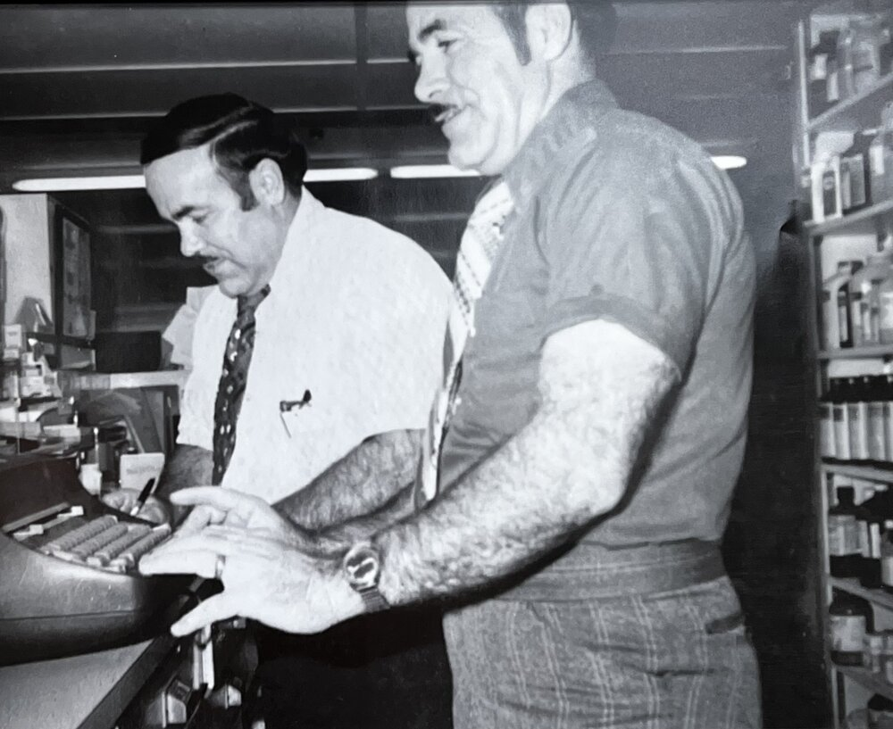

The Story of How T & T Pharmacy Came To Be
Onezippe Joseph (O.J.) Torres & Alvin (Bud) Torres are brothers who grew up in a tiny town in Louisiana called Golden Meadow. They grew up very poor. Their father was a part-time barber, and their mother became sick with tuberculosis and died when the boys were still very young. Their two older sisters married and moved to Vidor, Texas, where they worked as butchers and carpenters. With little money for a living, the two boys moved to Vidor with their sister Laura while they were just young teenagers.
While in school as a teenager, Bud got a job delivering milk on a truck. In the 11th grade, he dropped out of school to work at the Bethlehem Shipyards. Bud met Mary Briley while delivering milk, and courted her until they married. Mary was just 17 years old and still in high school. They kept their marriage a secret from the school until she graduated. World War II became a necessary part of their life plan when Pearl Harbor was attacked.
O.J. was drafted first and went on to serve in the Army Air Corps. He served in B-24 bombers over Germany. Later Bud was drafted in 1943 and was assigned to what was then a secret bomber, later named the B-29 Super Fortress. He served as a radio operator in the B-29 bombers. He flew in 23 missions over Japan, with the majority being over Tokyo. They both had heroin stories from their time in the service. They are true heroes.
Both men returned home with plans to go to college. They attended Lamar University in Beaumont, Texas for 2 years. When Bud finished his 2 year associates degree, the school discovered that he never finished high school. He then took a college entrance exam, and because he just finished two years of college, he scored very high on the exam. At that point the two brothers applied for dental school, but the school was already full and was not accepting new students. Someone informed them that a new pharmacy school was being started at the University of Houston. They both applied and were accepted. After 3 years of pharmacy school, they were part of the first graduating class of the pharmacy program at the University of Houston.

After graduation they found part-time work in Beaumont, Texas, but were having difficulties finding steady work. After a year of struggling for work, Bud transferred to Utah as a pharmacist. After 3 years of working in Utah, O.J. called Bud to tell him about a new pharmacy for sale in their little town of Vidor, Texas. Bud was excited for the opportunity to move back to Vidor.
When Bud returned to Vidor, O.J. was already working part-time at the new pharmacy. With a great opportunity to purchase the pharmacy, they acquired a $45,000 loan from a family friend in Houston. They purchased the pharmacy in January of 1955, and changed the name to T & T Pharmacy. The pharmacy also had a soda fountain with it that served two meals a day along with sodas, ice cream, and treats. The soda fountain was really popular and had long hours, 7am to 10pm. The brothers found temporary housing in Vidor and went to work in their new pharmacy. They had great success, and paid off their $45,000 loan in just 5 years.
Bud's oldest son, Gary, served a mission in the North Western States Mission for The Church of Jesus Christ of Latter-Day Saints. After he returned home from his 2 year mission, he attended BYU as a chemistry major. After a year of school, he changed his major to pre-pharmacy. A year later he applied to the University of Houston School of Pharmacy. One of the requirements for admission was to have an interview with the dean of the program. During his interview with the dean, Gary mentioned that his father and uncle were part of the first graduating class of the university's pharmacy program. The dean was so excited that he accepted Gary's application immediately. After 3 years, he graduated, and returned to Vidor to work with his father and uncle. He worked hard and helped the brothers build the pharmacy. Gary slowly worked his way into ownership. He eventually became full owner and has been here for over 54 years.
The pharmacy has become a staple in the small community of Vidor, Texas. Serving the community with one goal in mind; to provide a friendly, great quality of care to everyone, at an affordable price.